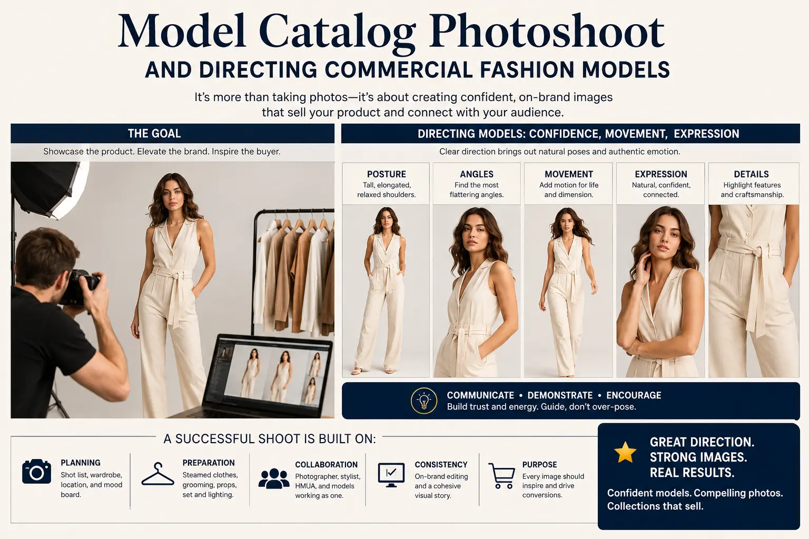
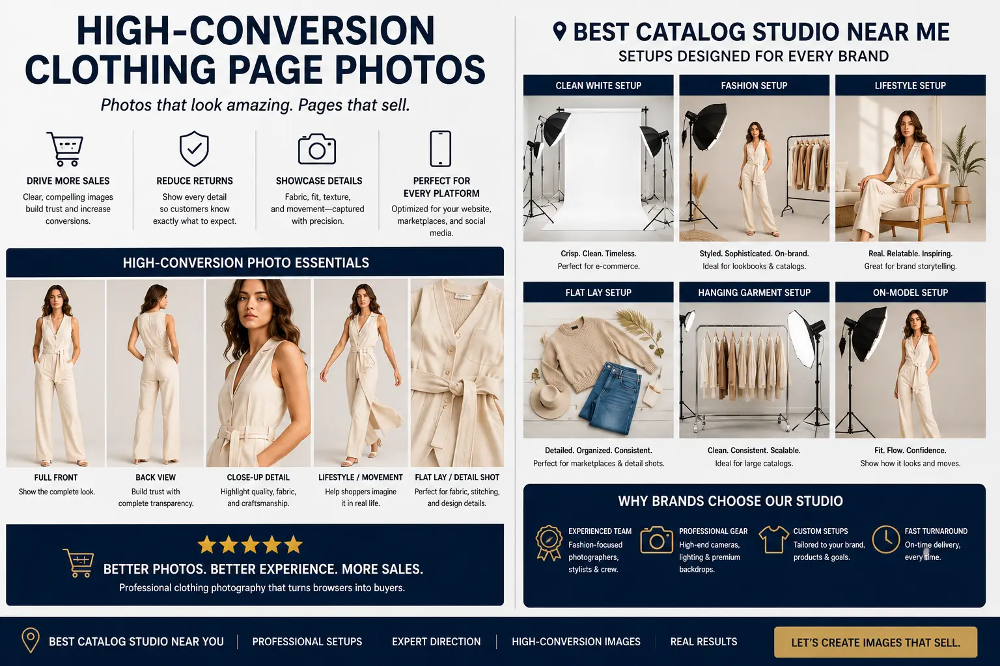

Why Real-Model Alternative Angling Multiplies Buyer Confidence
Bridging the Physical-Digital Gap in Apparel Commerce
The greatest hurdle in digital fashion retail is the inability of the customer to physically touch, feel, and try on clothing. When browsing a product catalog, online buyers must rely entirely on visual assets to assess material quality, structural cut, drape, and real-world proportions. If the visual presentation is flat, static, or uninformative, fit uncertainty rises. In modern e-commerce, bridging this gap requires investing in high-quality E-commerce Product Photography and conducting a structured Model Catalog Photoshoot.
While static flat-lays and mannequin displays have their place, they often struggle to show how a garment fits and moves on a real human body. When fashion brands show apparel on professional models photographed from multiple creative angles—front, profile, back drape, and dynamic movement—fit uncertainty drops significantly. By demonstrating how fabric contours, stretches, and flows in real-world scenarios, brands can build confidence and drive purchase decisions.
This is the core of modern retail catalog styling: using real-world human scale and directional angles to guide the shopper from evaluation to the Add to Cart button.
The Visual Limits of Static Product Displays
Relying exclusively on flat-lays or generic mannequin displays can create several challenges for growing apparel brands:
- Lack of Drapery and Flow. Flat-lays cannot represent the weight and thickness of a fabric, or show how it folds, creases, and flows around human joints and curves during movement.
- Fit and Proportion Ambiguity. Mannequins lack realistic body variations, making it difficult for buyers to estimate how a size fits on a real person, which can lead to higher return rates.
- Flat, Boring Color Representation. Without the natural highlights and shadows created by human movements, garments can appear flat and less appealing under static studio light arrays.
- Low Emotional Engagement. Human faces and expressions capture attention and tell a brand story. Static product shots lack the personality needed to build emotional connections.
Realistic Drapery & Fit
Investing in a professional Model Catalog Photoshoot helps showcase the realistic fit, proportions, and drape of clothing on a human form, reducing buyer hesitation.
Hollow-Cut Views
Using Invisible mannequin photography tech alongside model shoots lets you show the interior stitching, pockets, and collars, providing a complete view.
Garment Scale Precision
Setting up a systematic model garment fit catalog setup provides clear scale and fit references for shoppers, helping lower return rates.
Visual Storytelling
Structuring a premium premium apparel visual structuring pipeline ensures that every item in your catalog is represented with consistent angles, lighting, and detail shots.

Directing and Structuring the Perfect Catalog Production
Capturing high-converting catalog assets requires combining technical camera setups, structured composition rules, and clear model direction:
- Rule 1: Focus on directing commercial fashion models effectively. During shoots, focus on directing commercial fashion models to use natural, subtle movements. Instead of static, exaggerated poses, encourage walking, gentle turns, and comfortable stances that show how the fabric moves in real life.
- Rule 2: Capture clean, high-conversion clothing page photos. Ensure your catalog gallery includes high-conversion clothing page photos representing front, 45-degree profile, full back, and macro detail shots. The back view is critical for garments with unique drapes, cuts, or detailing.
- Rule 3: Integrate invisible mannequin photography tech. Use Invisible mannequin photography tech (also known as ghost mannequin) to capture hollow-cut views of the interior details. Overlaying these hollow-cut views in the gallery helps customers inspect inner seams, branding labels, and pocket liners.
- Rule 4: Standardize your model garment fit catalog setup. Maintain a consistent model garment fit catalog setup across your collection. Use consistent lighting, background colors, and crop proportions to make browsing your collection clean and seamless.
- Rule 5: Keep backgrounds neutral and distraction-free. Use soft gray, off-white, or neutral background tones to keep focus on the product. High-contrast or busy backgrounds distract the eye and can cause color cast issues on fabrics.
- Rule 6: Highlight functional details. Always capture close-ups of functional features: pockets, adjustable cuffs, lining textures, zipper systems, and custom hardware. These details justify the price point and resolve purchase uncertainties.
Selecting the Right Studio and Platform Frameworks
Setting up a high-performance visual catalog requires selecting the right production partner and configuring your store's image system:
Choosing the Best Studio Partner
- Partner with the best catalog studio near me in Southern India to access professional gear and experienced production teams.
- Select a studio with dedicated fashion catalog sets, diffusers, and multi-camera arrays.
- Ensure the studio has an in-house post-production team to handle color matching.
- Confirm they can handle high-volume batch processing for seasonal launches.
Consistent Visual Structuring
- Organize your catalog with a consistent image aspect ratio (such as 4:5 or 1:1).
- Ensure the product is centered in the main thumbnail view to keep collection grids neat.
- Create a standard sequence for galleries: Primary Model -> Alternative Angles -> Texture Details -> Scale Reference.
- Maintain consistent white balance across all model shoots to keep product colors accurate.
E-Commerce Gallery Integration
- Use responsive galleries that automatically scale images based on screen width.
- Enable swipe gestures on mobile for quick browsing between alternative views.
- Load high-resolution detail views only when a user interacts with the zoom tool.
- Include scale reference charts or model height and size data in the gallery area.
Optimizing E-Commerce Catalog Layouts for Conversion
Once high-quality visual assets are captured, they must be integrated into a responsive page layout to maximize conversions.
Using E-commerce Product Photography on models helps establish your brand's aesthetic. A consistent Model Catalog Photoshoot routine creates a professional, unified look across your collection pages.
At the same time, applying premium apparel visual structuring rules ensures that the product details are easy to inspect, building customer trust and helping lower return rates.

Conclusion
Using real models and alternative angles is essential to build buyer trust in digital fashion retail. By investing in E-commerce Product Photography and conducting professional Model Catalog Photoshoot sessions, apparel brands can showcase the realistic drape, fit, and texture of their designs.
Through modern Invisible mannequin photography tech, consistent model garment fit catalog setup, and effective post-production, you can create a seamless catalog browsing experience.
At The PhD Ads in Madurai, we produce conversion-optimized catalog photography, help brands with directing commercial fashion models, and deliver high-conversion clothing page photos that drive sales.
Key Topics
Elevate Your Fashion Catalog Visual Production
Ready to create high-conversion apparel catalog photos? At The PhD Ads in Madurai, we run professional model shoots, ghost mannequin sessions, and style lookbooks to help brands grow.
Email: team@e2o.in